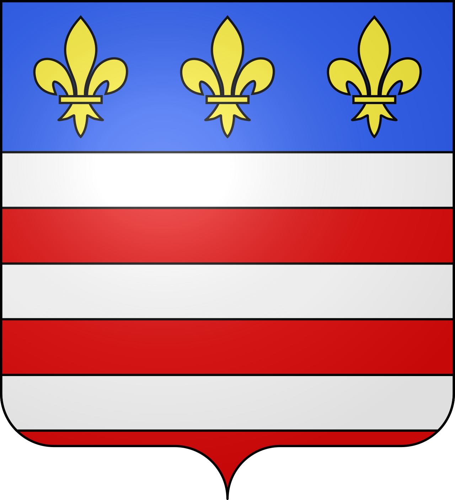

UzèsLe premier duché de France


⟹ Duché · Place aux Herbes · Haras national ⟸

Avant même la fondation officielle d'Uzès, le territoire s'inscrit dans ce vaste pays de l'Uzège, plaine calcaire drainée par l'Alzon et le Gardon, occupée depuis la Protohistoire et profondément romanisée dans le sillage de la colonie de Nemausus, aujourd'hui Nîmes, dont l'aqueduc, immortalisé par le Pont du Gard, traversait justement ce territoire pour acheminer l'eau depuis la source d'Eure.
Une cité épiscopale héritière de l'Antiquité. Établie sur un promontoire dominant la vallée de l'Alzon, Uzès occupe un site fréquenté depuis l'Antiquité : les premiers Uzétiens s'installent autour de la source d'Eure, que les Romains captent ensuite pour alimenter en eau la Nîmes en pleine expansion, via l'aqueduc immortalisé par le Pont du Gard. La ville, connue à l'époque romaine sous le nom de Castrum Ucetiae, commandait alors les routes du nord-est parmi les cités dépendant de Nîmes. C'est au IVe siècle, sous l'ère constantinienne, que se répand ici la religion chrétienne et que se fonde l'évêché d'Uzès, dont les premiers évêques, souvent issus de riches familles notables, jouent un rôle considérable, tant spirituel que temporel, dans l'organisation de la cité — un rôle qui structure durablement son tissu urbain autour de la cathédrale Saint-Théodorit et de la tour Fenestrelle, remarquable clocher roman de plan circulaire haut de quarante-deux mètres, dont la partie haute, détruite pendant les guerres de Religion, fut reconstruite à l'identique au XVIIe siècle.
Trois pouvoirs pour une seule cité. Tout au long du Moyen Âge, Uzès voit coexister trois autorités concurrentes qui se partagent la ville : l'évêque, le vicomte puis duc, et le roi de France, chacun disposant de sa propre tour féodale au sein même de l'enceinte urbaine — la tour de l'Évêché, la tour du Roi et la tour Bermonde, la plus haute, au cœur du futur Duché. Cette coexistence de pouvoirs rivaux, typique des seigneuries languedociennes morcelées par les successions, donne à la vieille ville son architecture composite si particulière. En 1229, à l'issue de la croisade des Albigeois, le Languedoc tout entier, Uzès comprise, est rattaché à la couronne de France.
1565 : la naissance du premier duché de France. En 1565, le roi Charles IX érige la vicomté d'Uzès en duché au profit d'Antoine de Crussol, désireux de s'assurer la loyauté de cette puissante famille languedocienne ; le duché devient duché-pairie par de nouvelles lettres patentes en février 1572. Ce titre de « premier duché de France » ne repose pas sur l'ancienneté du fief lui-même, mais sur l'ordre de préséance protocolaire accordé au duc d'Uzès parmi les pairs du royaume : depuis lors, au Parlement comme au sacre du roi, le duc d'Uzès a préséance sur toutes les autres maisons nobles de France. Le château ducal, dit le Duché, occupé depuis par la même lignée jusqu'à son dix-septième descendant aujourd'hui, domine encore la ville de sa silhouette de tours accolées, mêlant architecture médiévale, façade Renaissance attribuée au crayon de Philibert Delorme et adjonctions plus tardives.
L'Uzège médiévale se structure autour de puissantes institutions ecclésiastiques et seigneuriales : évêché d'Uzès, abbayes et maisons nobles se partagent un territoire rural voué à la polyculture méditerranéenne, vigne, olivier et céréales, complétée localement par l'élevage ovin transhumant vers les garrigues et, plus tard, vers les estives cévenoles.

Une place forte protestante déchirée par les conflits religieux. Comme une grande partie du Languedoc, Uzès adhère massivement à la Réforme au XVIe siècle : dès 1573, les consuls de la ville sont tous protestants, une situation qui perdure jusqu'en 1632, date à laquelle les catholiques retrouvent enfin l'accès au consulat. Malgré l'édit de Nantes de 1598 proclamant la liberté des cultes, les tensions ne cessent de s'envenimer : en 1620, une assemblée de ministres huguenots décide d'expulser de la ville les religieux jugés les plus menaçants, les Jésuites ; les protestants prennent alors les armes, pillent la cathédrale, tuent des catholiques et démolissent l'évêché. La ville se développe ensuite comme centre commercial et artisanal de l'Uzège, spécialisé notamment dans le commerce de la soie et, plus tard, de la truffe et du vin.
Une duchesse hors du commun et la Révolution. Le 23 décembre 1788, une grande assemblée réunit à l'hôtel de ville 578 députés des trois ordres du diocèse, prélude aux bouleversements révolutionnaires qui seront fatals aux deux pouvoirs historiques de la ville, le Duché et l'évêché : dès le XIXe siècle, l'histoire d'Uzès se démocratise et se provincialise. Parmi les grandes figures de la lignée ducale, la duchesse Anne de Rochechouart de Mortemart, descendante de la maison Veuve Clicquot, marque durablement son époque : cavalière hors pair devenue la première femme lieutenant de louveterie de France, sculptrice sous le pseudonyme de Manuela, féministe engagée, elle finance également de sa fortune personnelle le général Boulanger dans ses ambitions politiques.
Un haras national et un patrimoine architectural préservé. En 1972, le haras national d'Uzès est créé pour centraliser la gestion de l'élevage équin dans le Midi méditerranéen, à la suite de la fermeture des anciens dépôts d'étalons d'Arles et de Perpignan ; il demeure aujourd'hui l'un des derniers haras nationaux de France encore en activité. Le classement du centre-ville en secteur sauvegardé, prononcé le 5 janvier 1965, permet depuis lors la restauration méthodique de ses quarante et un hectares d'hôtels particuliers Renaissance et classiques, qui vaut à Uzès d'être surnommée la « petite Rome » et d'attirer un tourisme patrimonial de premier plan.
Une ville de mémoire littéraire. L'écrivain André Gide, dont la famille paternelle était originaire d'Uzès, a évoqué la ville dans plusieurs de ses écrits, contribuant à sa notoriété littéraire au XXe siècle.
Comme l'ensemble du Bas-Languedoc, l'Uzège connaît au XVIe siècle une adhésion massive à la Réforme protestante, qui plonge la région dans les guerres de Religion. Uzès elle-même devient une place de sûreté protestante avant d'être reprise en main par le pouvoir royal au début du XVIIe siècle, tandis que les campagnes environnantes conservent longtemps une identité huguenote affirmée.
Le XXe siècle voit l'Uzège se réorganiser autour de l'agriculture de qualité, viticulture, oléiculture et surtout trufficulture, qui font aujourd'hui la réputation gastronomique de ce terroir, tandis que la proximité du Pont du Gard, classé au patrimoine mondial de l'UNESCO en 1985, dynamise fortement le tourisme patrimonial de l'ensemble du territoire.

Aujourd'hui, Uzès conserve une identité marquée par ce passé : cité ducale, « petite rome » du gard, la commune s'inscrit pleinement dans la zone Uzège & Pont du Gard, entre mémoire patrimoniale et vie locale contemporaine. Cette continuité, entre héritage et vie quotidienne, fait aujourd'hui tout l'intérêt d'une visite attentive à l'histoire du lieu.
Uzès porte le titre de premier duché de France comme une couronne discrète, posée sur une cité épiscopale devenue, au fil des siècles, l'une des plus élégantes petites villes du Languedoc.
Synthèse historique — L'Âme des Régions